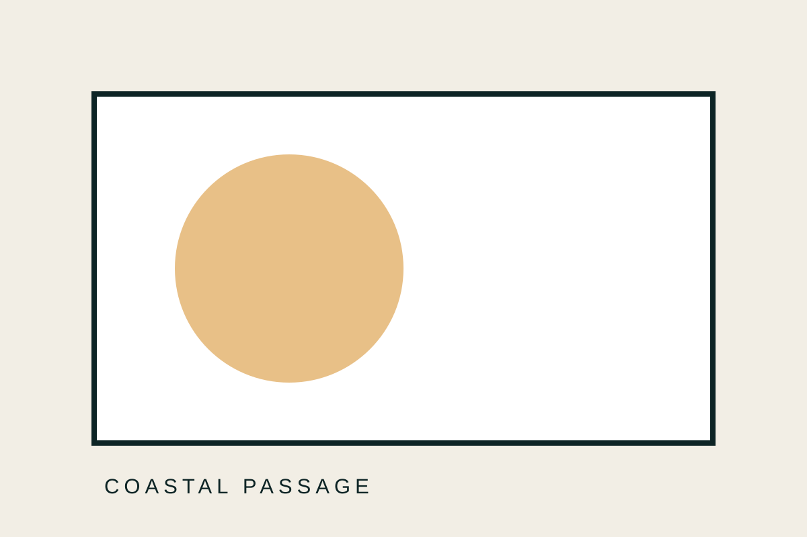
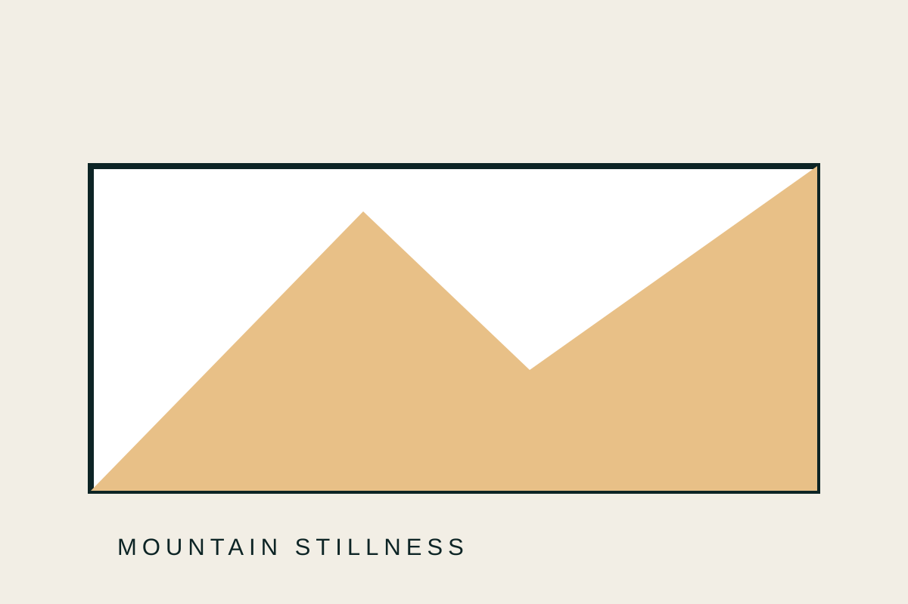

01
Coastal Passage
เส้นทางเลียบชายฝั่งที่ผสานธรรมชาติ อาหาร และชุมชนท้องถิ่น
รายการที่คัดสรรให้สะท้อนแนวคิดและมาตรฐานของธุรกิจ

เส้นทางเลียบชายฝั่งที่ผสานธรรมชาติ อาหาร และชุมชนท้องถิ่น

การเดินทางสู่ภูเขาเพื่อสัมผัสอากาศสงบและวิถีชีวิตที่เรียบง่าย